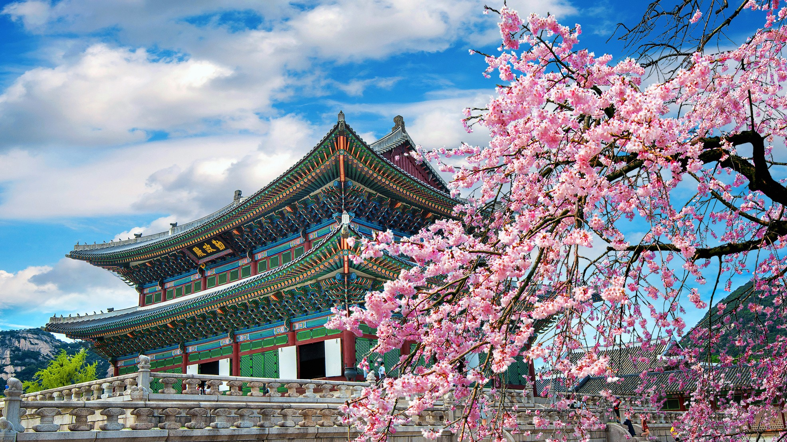
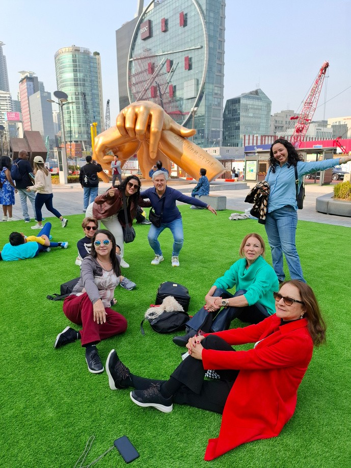
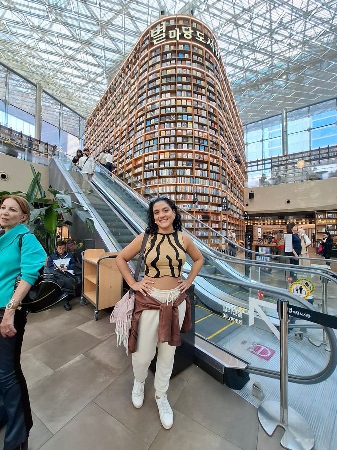
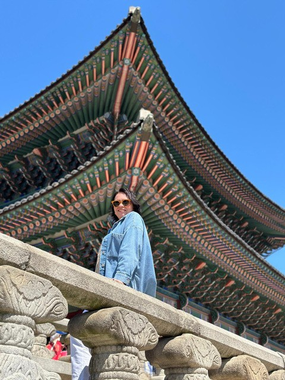
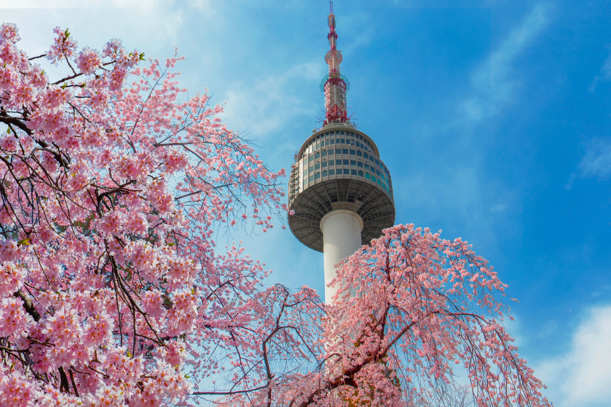
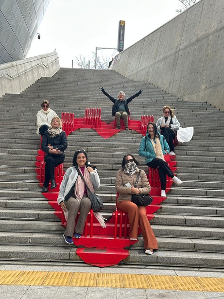
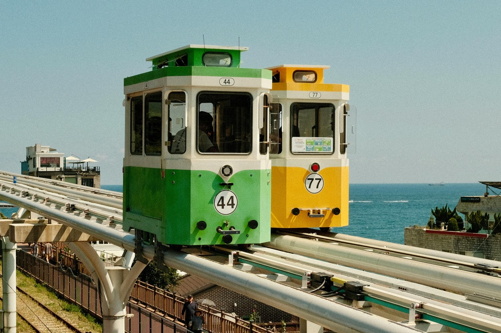
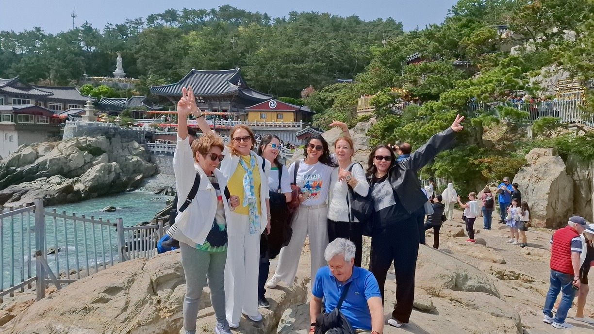

Seul
Uma cidade que pulsa entre tradição e inovação. Dos palácios centenários aos bairros iluminados, Seul encanta com sua cultura vibrante, gastronomia marcante e experiências que revelam a essência da Coreia do Sul.

Um roteiro por Seul, Chuncheon, Gyeongju e Busan.
Registros de experiências da Lefer Viagens na Coreia do Sul.



Uma cidade que pulsa entre tradição e inovação. Dos palácios centenários aos bairros iluminados, Seul encanta com sua cultura vibrante, gastronomia marcante e experiências que revelam a essência da Coreia do Sul.
Conhecida por suas paisagens românticas, Chuncheon convida a desacelerar. Lagos, montanhas e ruas charmosas criam o cenário perfeito para viver a tranquilidade da natureza e os sabores da culinária coreana.
Viajar por Gyeongju é voltar no tempo. Antiga capital do Reino de Silla, a cidade preserva templos, tumbas e patrimônios históricos que contam séculos da história e da cultura coreana.
Entre praias, montanhas e mercados tradicionais, Busan revela um lado descontraído da Coreia. A combinação de paisagens costeiras, templos à beira-mar e gastronomia local torna cada momento inesquecível.
Imagens que antecipam alguns dos cenários, culturas e experiências desta jornada.




Consulte o PDF com as informações originais do pacote Coreia do Sul na Primavera 2027.
O botão abre o WhatsApp já identificando o pacote Coreia do Sul na Primavera 2027.
Coreia do Sul na Primavera 2027